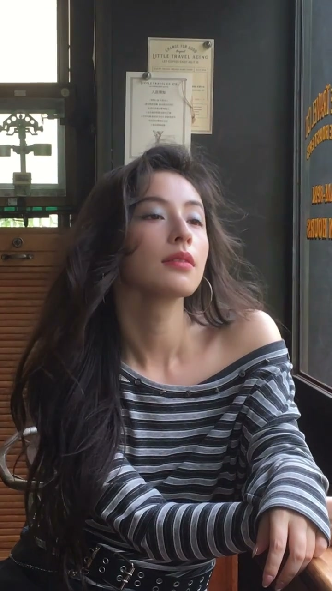
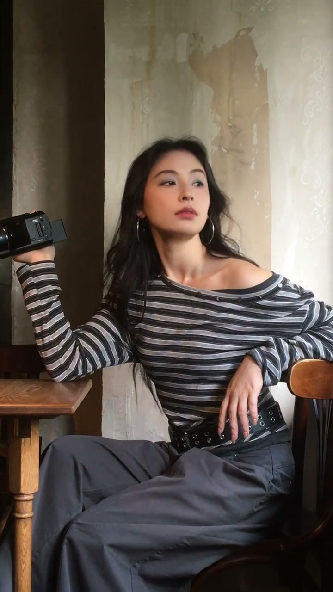

浅蓝色眼影+迷离眼神
00:00前两色眼影里的眼神（配乐）——画面主体是浅蓝色眼影搭配迷离慵懒的眼神，千禧年复古妆容的核心示范。
00:04配合粤语BGM，整体氛围复古、松弛，营造出“千禧年复古美人”的感觉。

千禧年氛围感打造
00:07整个视频以复古滤镜+粤语老歌贯穿，妆容与场景（商场CPI）融合，示范“化好妆还要会拍照”的氛围感思路。
00:10这种Y2K复古风眼妆适合拍照出片，浅蓝清透显白，搭配迷离眼神特别上镜。

Y2K复古风定格
00:13结尾定格在千禧年复古感的画面——蓝色眼影是Y2K的标志性符号，配合复古配饰和灯光，完成整套氛围感展示。
蓝色眼影是Y2K的标志符号——浅蓝清透、眼神迷离、BGM复古，妆效+氛围才是完整的复古感。